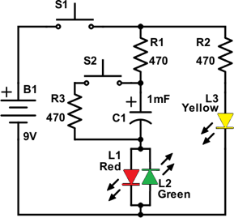
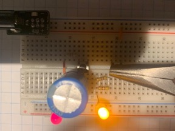
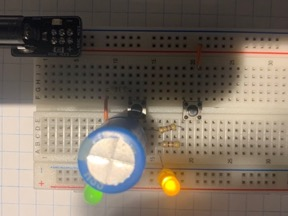
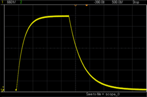

2023 · Electronics Foundations
Capacitor Visualizer
Built a switch-controlled capacitor circuit that makes charging and discharging visible through LEDs. The project turned an abstract RC time-constant concept into a physical demonstration that could be observed and timed.

Video Demonstration
Working demonstration
The project video shows the physical build, behaviour, and final result.
 ▶ Watch on YouTube
▶ Watch on YouTube
Project Overview
Make capacitor behaviour visible instead of theoretical.
The main challenge was making the timing behaviour visible and understandable: the capacitor had to charge slowly enough to observe, discharge predictably, and show different states through LED outputs.
What I built
- 1000 µF capacitor charge/discharge circuit
- PBNO switch control path
- LED indicators for charge and discharge states
- Observed timing comparison against theoretical RC values
Technical Skills
Skills demonstrated
Analog circuit behaviour
Applied directly in the design, build, debugging, or final integration of the project.
RC timing
Applied directly in the design, build, debugging, or final integration of the project.
Breadboard construction
Applied directly in the design, build, debugging, or final integration of the project.
Measurement and comparison
Applied directly in the design, build, debugging, or final integration of the project.
Build Story
Circuit diagram and charge/discharge demonstrations
Charge/discharge timing
The image to the right shows the breadboard prototype during a discharging demonstration, with the stored capacitor charge lighting the LEDs after the main switch path is released.

Switch-controlled current paths
The image to the right shows the breadboard prototype in another capacitor state, where the LED indicators make the changing current path visible during the charge/discharge cycle.

Final RC behaviour
The image to the right shows the capacitor charge/discharge curve. The capacitor approaches full charge by moving about 63% closer each time constant and is effectively charged after about five time constants; during discharge, the stored charge falls in the same time-constant pattern.
